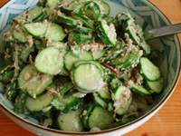
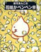
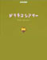

amplog
日々の暮らし
プロフィール
餅月あんこ：HA生成による虫歯治療の実用化に期待を寄せています。
mochitsuki.com
2005年07月
日
月
火
水
木
金
土
1
2
3
4
5
6
7
8
9
10
11
12
13
14
15
16
17
18
19
20
21
22
23
24
25
26
27
28
29
30
31
マンスリーアーカイヴ
2005年07月 (1)
2005年06月 (6)
2005年05月 (12)
2005年04月 (12)
2005年03月 (15)
2005年02月 (25)
2005年01月 (26)
2004年12月 (18)
2004年11月 (9)
2004年09月 (2)
2004年08月 (7)
2004年07月 (18)
2004年06月 (15)
ニュートピックス
HIYAJIRU（冷や汁）
ミュージカルバトン
熱タイヤ
月曜新メンバー
具合の悪いネコと私の食生活
さいきんのCMなど
nintendogs公式ガイドブック
サンダルDE迷走
マブいスケ
ひどい！
Main
|
ミュージカルバトン »
HIYAJIRU（冷や汁） / モチツキッチン レシピ
/
2005年07月05日(火)
暑くて食欲がないからって冷や汁（宮崎名物）ばっかり食べてたらさすがにちょっとカルシウム過多のような気がしてきました。

明らかに材料の比率がおかしいモチツキッチン's 冷や汁（しかもこの時豆腐を入れ忘れてる）
ほんとはこう
（このページの写真、高解像度っちゅーか写真撮った人の腕がいいのか、表情もいいし、ゴザがレフ板代わりになってるのか、おばちゃんの顔色がキレイじゃが…）
↓材料と作り方（モチツキッチン2005ver.）
・いりごま
・ピーナッツ
・いりこ
・（あれば）アジの煮干
・みそ（あれば麦みそ）
・水
↑ここまではすりばちでする内容
・キュウリ
・豆腐
・お好みで大葉
を、なんか好きなような感じにして、最終的にはごはんにかけて食べる。
あと私の予想では、
・粉末にぼし
・（しゃぶしゃぶ用とかの）ごまだれ
・味噌
・水
を混ぜるだけでも、すりばちを使わずしてスゲー簡単に冷や汁ができそーな気がするんですが怖いのでまだ試してません。
Posted at 21:05 /
モチツキッチン レシピ
/
この記事のURL
この記事のURL
http://yaplog.jp/anko/archive/192
Google AdSense
<img>
ケンサク
サーチ:
?
リンク
Books
ぺんぺん草シリーズ1
きまぐれペンペン草

ぺんぺん草シリーズ2
花咲かぺんぺん草
ぺんぺん草シリーズ3
花咲かぺんぺん草（2）

ドラネコシアター final collection
ぺんぺん草シリーズ4
花ぺん１
かんたん！かわいい！
今すぐ
ブログ
を無料登録！
今回のお勧めはオンラインゲーム。
コルムオンライン
は今人気急上昇のオンラインＲＰＧ。美しい仮想世界で自分だけのキャラクターをつくれるのが魅力☆友達と一緒に旅に出よう！（無料）
ラブログに
中林美和
さん登場！みんなヨロシクね
▲ ページトップへ
ブログ
＋
ヤプース！
＝
ヤプログ！